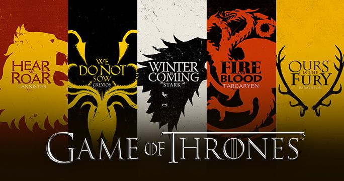
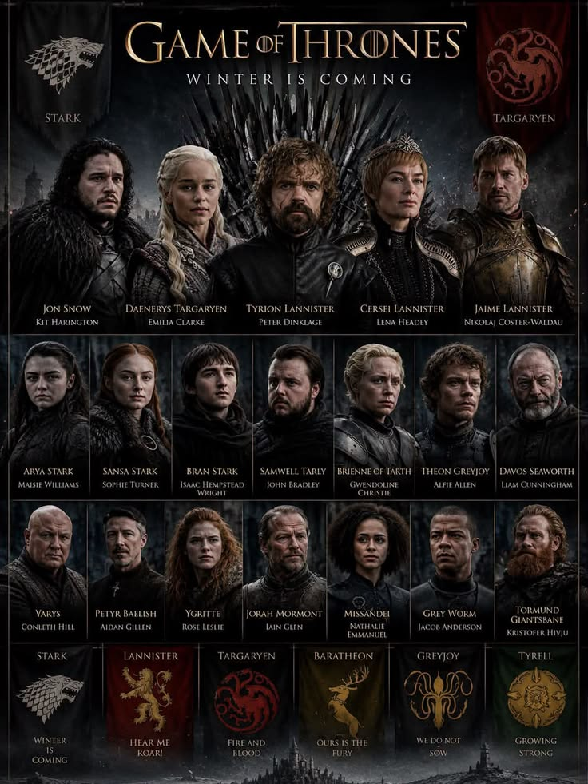

Game Of Thrones
Game Of Thrones, George R. R. Martin'in "Buz ve Ateş Şarkısı" roman serisinden uyarlanan, taht kavgaları, ejderhalar
ve Westeros'un yedi krallığını konu alan destansı bir dizidir.
1. Büyük Hanedanlar ve Bölgeler
Westeros'un Asil Aileleri
Westeros topraklarında demir taht için mücadele eden pek çok güçlü hanedan bulunur.
Her hanedanın kendine has sembolleri, mottoları ve bölgeleri vardır.
- Stark Hanedanı
- Motto: Kış Geliyor (Winter is Coming)
- Sembol: Ulukurt
- Bölge: Kuzey (Kışyarı)
- Targaryen Hanedanı
- Motto: Kan ve Ateş (Blood and Fire)
- Sembol: Üç Başlı Ejderha
- Bölge: Ejderhakayası / Ejderhağferi
- Lannister Hanedanı
- Motto: Kükrememi Dinle!
- Sembol: Aslan
- Bölge: Batı Toprakları (Casterly Kayası)
- Baratheon Hanedanı
- Motto: Bizimdir Öfke
- Sembol: Taçlı Geyik
- Bölge: Fırtına Toprakları (Fırtına Sonu)
- Martell Hanedanı
- Motto: Eğilmez, Bükülmez, Kırılmaz (Unbowed, Unbent, Unbroken)
- Sembol: Kızıl Güneş ve Mızrak
- Bölge: Dorne (Güneş Mızrağı)
- Greyjoy Hanedanı
- Motto: Biz Ekmeyiz (We Do Not Sow)
- Sembol: Altın Kraken
- Bölge: Demir Adalar (Pyke)
- Tully Hanedanı
- Motto: Aile, Görev, Onur (Family, Duty, Honor)
- Simge: Gümüş Alabalık
- Bölge: Nehir Toprakları (Nehir Alan)

2. Önemli Karakterler
Kuzeyin ve Tahtın İsimler
Hikaye boyunca hayatta kalmaya çalışan, intikam peşinde koşan ya da tahtı hedefleyen
pek çok unutulmaz karakter yer alır.
- Stark Kardeşler
- Robb Stark (Genç Kurt)
- Jon Snow (Kuzeyin Kralı)
- Arya Stark
- Sansa Stark
- Bran Stark (Üç Gözlü Karga)
- Rickon Stark
- Taht Mücadelesindekiler ve Kraliyet
- Daenerys Targaryen (Fırtınada Doğan)
- Tyrion Lannister (Yarımadam)
- Cersei Lannister
- Jaime Lannister (Kral Katili)
- Tywin Lannister
- Joffrey Baratheon & Tommen Baratheon
- Dizinin Kaderini Değiştiren Diğer Efsaneler
- Petyr Baelish (Serçe Parmağı)
- Varys (Fısıltılar Efendisi)
- Sandor Clegane (Tazı)
- Brienne of Tarth (Tarthlı Brienne)
- Jorah Mormont
- Melisandre (Kızıl Kadın)
- Bronn (Paralı Asker)
- Theon Greyjoy (Reek)
- Tormund Giantsbane (Devbasa Tormund)
- Gecenin Kralı (Night King)

3. Dünyadan Unsurlar ve Efsaneler
Tehditler ve Önemli Detaylar
Krallıklar kendi içlerinde savaşırken, diyarın ötesinde çok daha büyük bir tehlike yaklaşmaktadır.
Gecenin Kralı ve Ak Gezenler (White Walkers) tüm yaşayanların amansız düşmanıdır.
Westeros'ta en değerli madenlerden biri Valyerya çeliğidir;
ejderha camı (dragonglass) Ak Gezenleri öldürebilen nadir silahlardandır.
Ejderhalar ise Targaryen hanedanının en büyük savaş gücüdür.
Buz ve Ateşin Şarkısı Kitap Serisi
- Taht Oyunları (A Game of Thrones)
- Kralların Çarpışması (A Clash of Kings)
- Kılıçların Fırtınası (A Storm of Swords)
- Kargaların Ziyafeti (A Feast for Crows)
- Ejderhalarla Dans (A Dance with Dragons)

Game of Thrones evreni; politik entrikaları, sürprizleri ve karakter derinliği ile
televizyon tarihinin en çok konuşulan yapımlarından biri olmuştur.